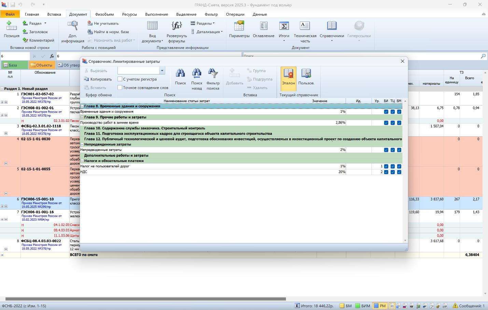

Лимитированные затраты
Лимитированные затраты — дополнительные расходы, устанавливаемые в процентах от сметной стоимости проекта. Они учитывают риски и непредвиденные ситуации, например, рост цен и изменение объёмов работ. Эти затраты помогают точно определить общую цену объекта для взаиморасчётов заказчика и подрядчика.
Какие есть виды лимитированных затрат
Затраты на производство СМР в зимнее время
Дополнительные расходы учитывают влияние низких температур и ветровых нагрузок (до 10 м/с) при проведении работ в холодный период. Размер зависит от температурной зоны региона.
Основание: Приказ от 25.05.2021 № 325/пр
Расходы на временные здания и сооружения
Нормативы зависят от типа объектов:
- нефтяные и газовые промыслы — 3,5%
- учебные и научно-исследовательские учреждения — 1,8%
- санатории, дома отдыха и оздоровительные комплексы — 2,3%
- жилищно-гражданское строительство в сельской местности — 3,1%
Основание: Приказ от 19.06.2020 № 332/пр.
Затраты на перевозку и перебазировку работников
Включают затраты при выполнении работ вахтовым методом и перемещении строительно-монтажных организаций между объектами.
Основание: Приказ от 15.06.2020 № 318/пр
Резерв средств на непредвиденные расходы
Предназначен для покрытия дополнительных затрат при изменении проектных решений или условий строительства. Размер устанавливается процентно:
до 2% для непроизводственных объектов
до 3% для производственных и линейных объектов
до 10% для уникальных и технически сложных объектов
Основание: Приказ от 04.08.2020 № 421/пр.
Затраты на премирование технического заказчика
Связаны с поощрением за досрочный ввод объекта в эксплуатацию.
Основание: Приказ от 02.06.2020 № 297/пр.
